第一章
一
― 了 ―
読み終えていただき、ありがとうございました。
川の音は、ここで静かに流れ続けています。
音響について：音は自動では鳴りません。この作品の音はすべてブラウザ内で生成されるオリジナルの環境音と短い旋律で、右上の ♪ ボタンを押したときだけ始まります。音がなくても、物語は完全にお読みいただけます。
読み終えていただき、ありがとうございました。
川の音は、ここで静かに流れ続けています。
全十三章。あらすじは伏せ、章番号と舞台だけを示します。読んだ章には印が付きます。任意の章から読み始められます。
容姿は文章の中に委ねられています。ここでは原稿に書かれた事実の範囲で、物語の結末に触れずに紹介します。
生成画像（AI）
川沿いの路地、緑のドアの建物の二階でギター教室を開き、三階に住む。生徒は三十人ほど。
他人の演奏の「どこが」良いか、悪いかを正確に言える耳を持つ。父はパブのセッションでフィドルを弾き、母は聖歌隊の伴奏をする家庭に育った。コードを押さえるとき、左手首がわずかに内側へ傾く癖がある。
キーランと同い年の旧友。二〇〇五年の地区コンテストで出会った。図書館で借りた教本からコードを一つずつ覚えた。
演奏のあとに必ず「どこが」と訊き、答えを紙と小さい鉛筆に書き留める習慣がある。指がズボンの縫い目を叩く癖がある。
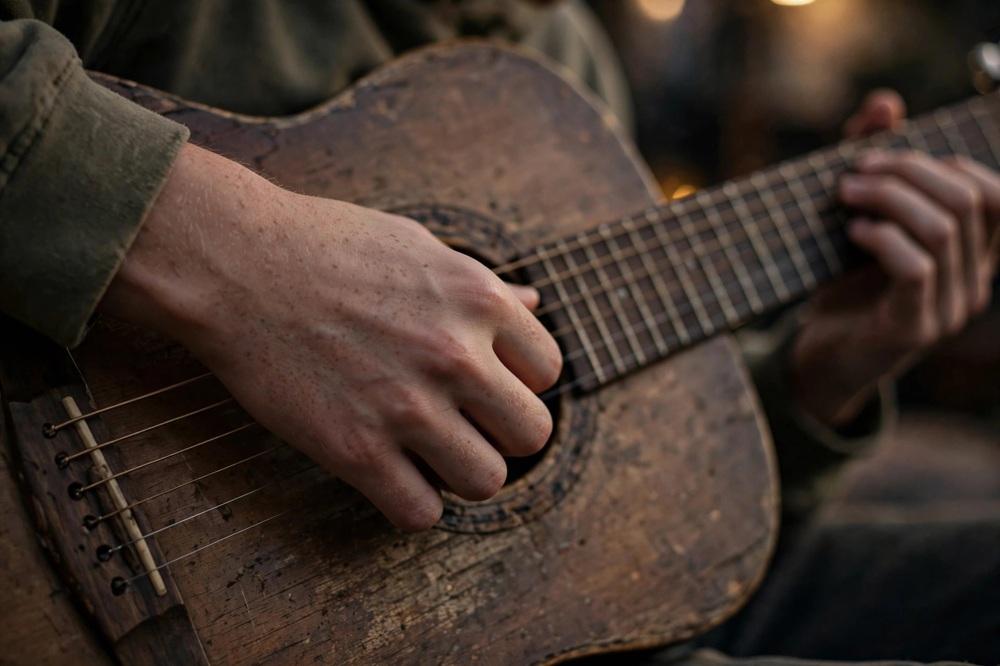
生成画像（AI）。ダラは手元のみで表します
四月にキーランの教室へ来た十五歳の生徒。右手の指が、いつも五拍子でテーブルを叩いている。
一度聴いたフレーズを、そのまま再現できる耳を持つ。数学の小テストの点数を、隠さず机に置く。
キーランより二つ年上の幼なじみ。地域の催しを企画する会社で働く。ギターは今も弾くが、仕事にはしていない。
事実だけを言い、慰めない。発表会のホールを押さえ、人の動きを静かに仕掛ける。
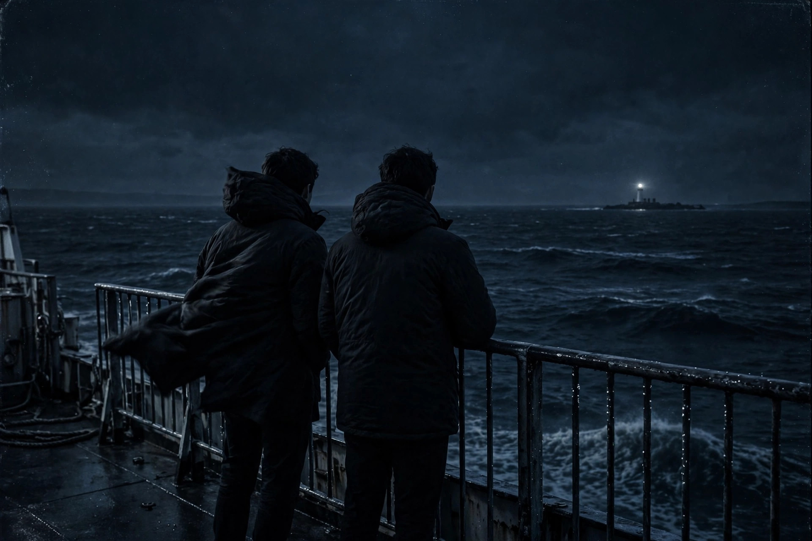
物語に登場する地名・川・航路は実在しますが、物語および登場人物はフィクションです。教室の建物、ホール、カフェ等の具体的な施設は作中のものであり、写真は実在地の風景・雰囲気を示すイメージで、作中の施設そのものではありません。実在の人物・団体・店舗と作中の描写との関係を示唆するものでもありません。写真はすべて Wikimedia Commons からライセンスを確認して取得し、各写真の下にクレジットを表示しています。クレジットの全点一覧と出典は「制作ノート」にあります。
PHOTO ― William Murphy from Dublin, Ireland, CC BY-SA 2.0, via Wikimedia Commons
アイルランド中西部、シャノン川河口近くの街。キーランの教室と自室があり、物語は川の音とともに始まり、川のほとりで閉じます。第1章・第7章・第13章で、同じ川が異なる光で再登場します。
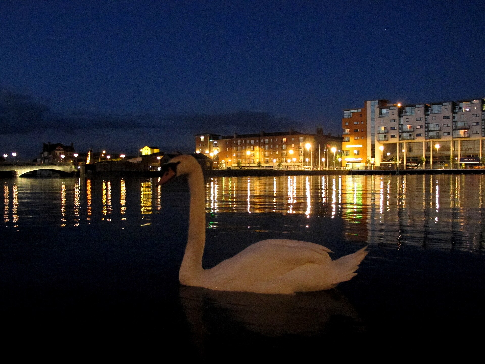
左：PHOTO ― mandoft from El Campello (Alicante), Spain, CC BY-SA 2.0, via Wikimedia Commons／右：PHOTO ― Claire WatersLulu, CC BY-SA 4.0, via Wikimedia Commons
PHOTO ― Stevesphotography, CC BY-SA 4.0, via Wikimedia Commons
少年時代に二人が弾いた橋の下の路上。そして、名札のプレートが落ちたままの路地。それでも郵便は毎朝届く――この路地は物語を貫くモチーフです。
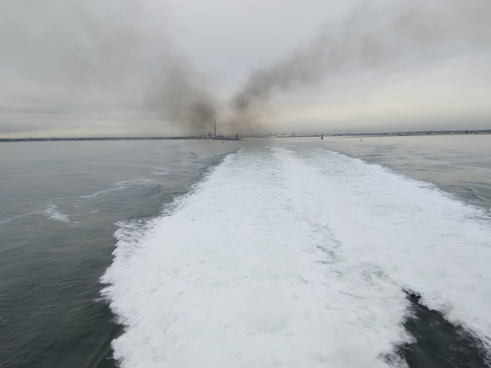
PHOTO ― Ridiculopathy / CC0, via Wikimedia Commons
十八歳の二人がロンドンへ向かう道すがら乗った夜のフェリー（第4章）。到着港の地名は原稿に明記されていないため、ここでも航路を断定しません。
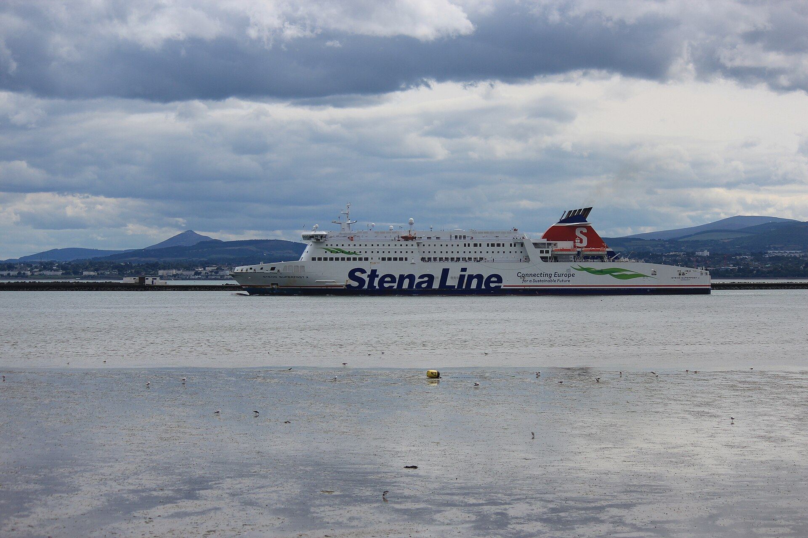
PHOTO ― Bob Castle / CC BY-SA 4.0, via Wikimedia Commons（アイリッシュ海のフェリーの写真であり、作中の航路そのものではありません）
PHOTO ― Jarle Hammen Knudsen (dubidubno), CC BY 4.0, via Wikimedia Commons
路上演奏の日々。顔のない群衆の中で、キーランの音は「出したそばから消えた」。クリスの動画が広がり、二人の道が分かれ始めた街（第5章）。
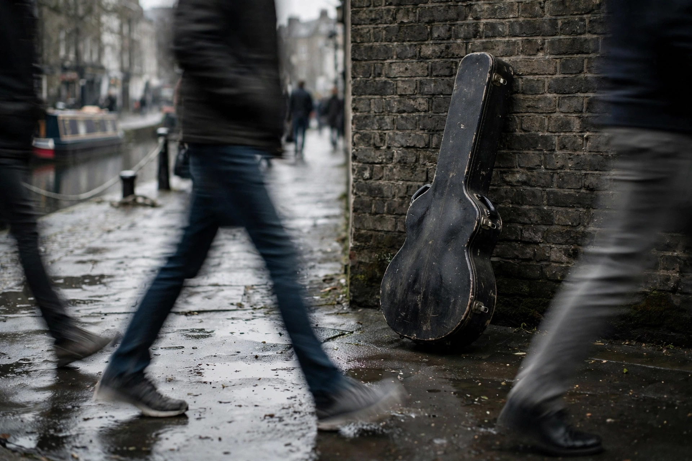
生成画像（AI） ― 路上に置かれたギターケース
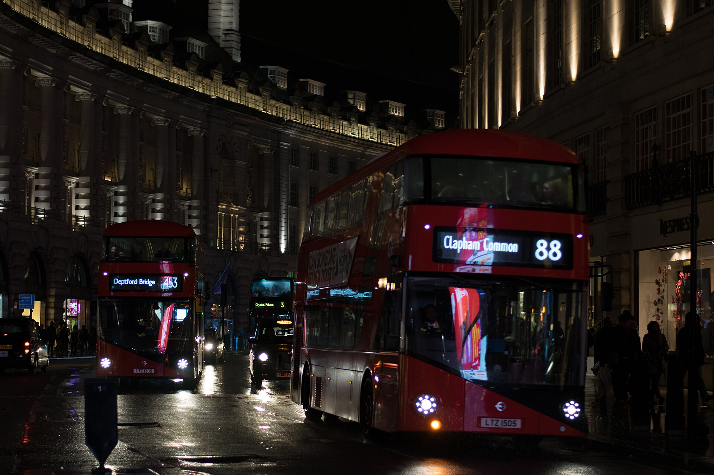
PHOTO ― 0x010C, CC BY-SA 4.0, via Wikimedia Commons
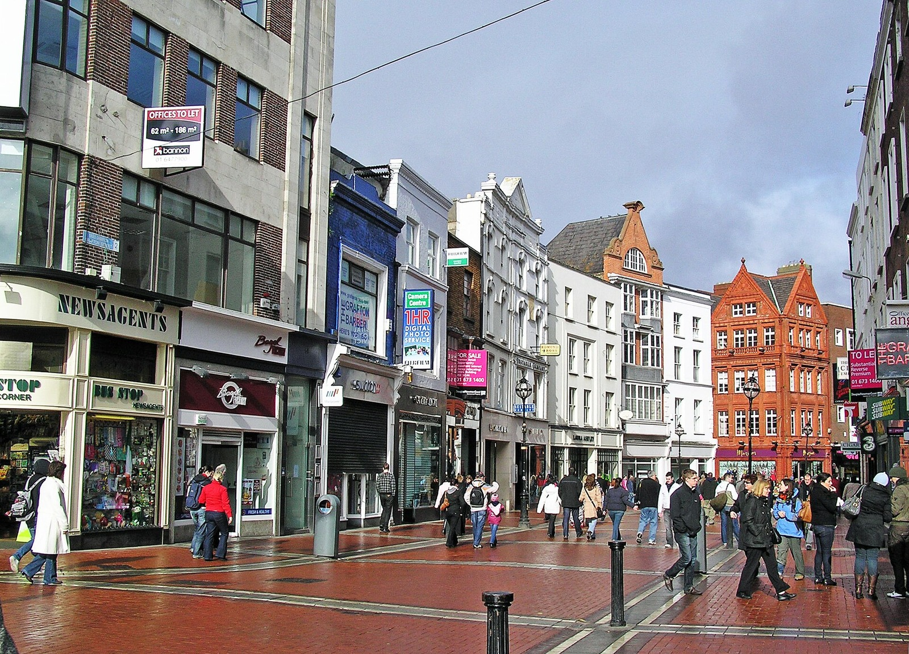
PHOTO ― Donaldytong, CC BY-SA 3.0, via Wikimedia Commons
キーランが四年間学んだ音楽院のある街。音楽院裏手の古いカフェでの再会は第10章です。下のカフェの画像は生成画像であり、作中の店の実物ではありません。
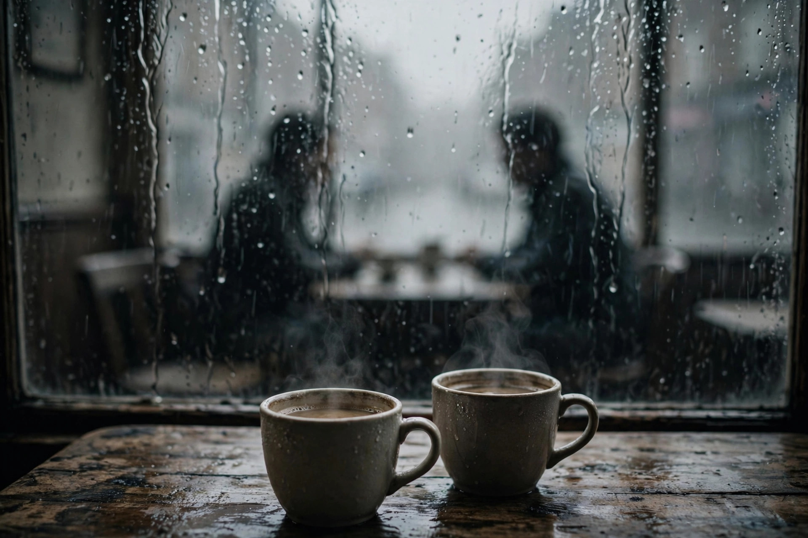
生成画像（AI） ― 雨のカフェの場面の像
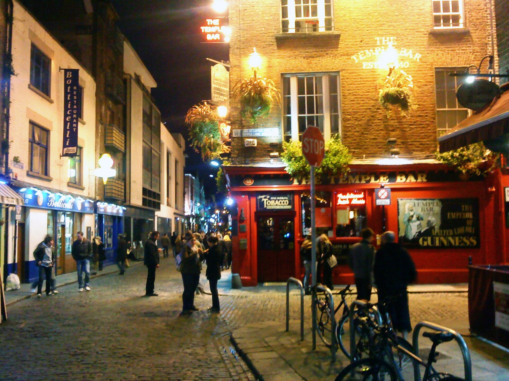
PHOTO ― Trevah, Public domain, via Wikimedia Commons
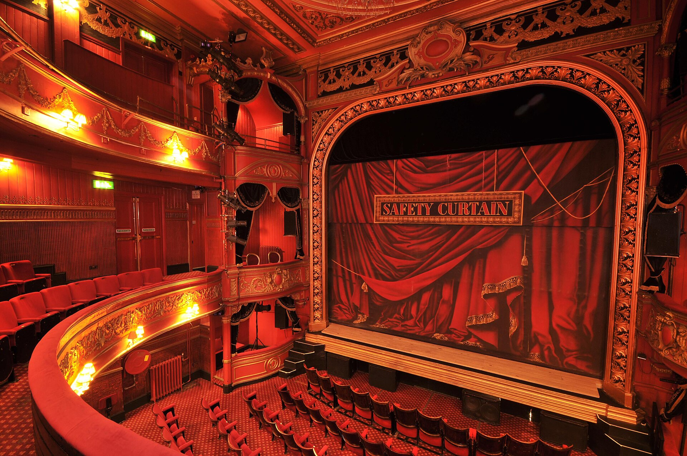
PHOTO ― Stratfordeast, CC BY-SA 3.0, via Wikimedia Commons（実在の劇場の内装であり、作中のホールそのものではありません）
三百席の古い講堂。木の壁と高い天井。写真は実在の劇場の内装で、雰囲気を示すものです。
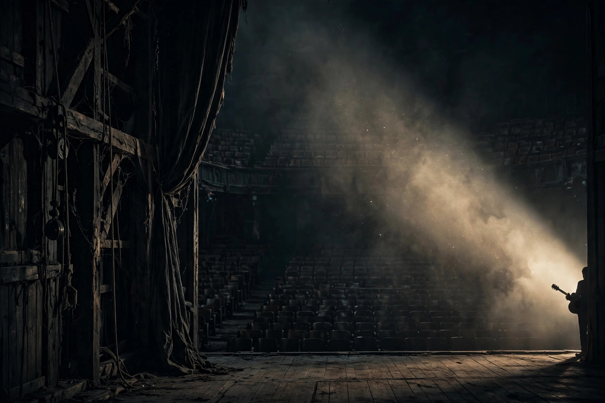
生成画像（AI） ― 舞台袖の場面の像
「小説の想像力を残したまま、映画の演出力を取り入れる」。視覚は、実在地の写真（Wikimedia Commons、ライセンス確認済み）と、顔を映さない映画的な生成画像を組み合わせ、全画像に統一した低彩度のグレードと控えめな粒子感を通して一本のフィルムのように見せます。本文を画像の上に直接置くことはせず、文章は常に不透明な地の上に置きます。音響は音声ファイルを使わず、Web Audio APIで生成するオリジナルの環境音と旋律モチーフです。シャノン川の場面（第1・7・13章）と教室の窓（第7・8・13章）では同じ構図系統を再利用し、光の条件だけを変えています。第9章は意図的に画像を置かない「沈黙の章」です。転換点の段落は全編で6件だけ、元の位置のまま広い余白で際立たせます（抜き出しての再掲はしません）。
| 章 | 舞台・出来事 | 背景と光 | 音響 | 強度 | 理由 |
|---|---|---|---|---|---|
| 一 | 9月末の夜。動画の中のクリスと、川沿いの自室 | 深い青灰色。下部に川の帯と対岸の灯の反射 | 川（弱） | 低 | 物語の基調。川の構図をここで刻み、終章で回収する |
| 二 | 2005年秋、コンテストと駐車場での出会い | 低彩度の暖灰色。現在より僅かに明るく | なし | 低 | 回想を感傷的にしない。「どこが」の習慣の始まりは言葉だけで十分 |
| 三 | 台所、父のラジオ、金曜のパブのセッション | 室内の暖かい光（彩度は抑制） | なし（室内の静けさ） | 低〜中 | 音楽の家の空気は、音を足さず文章に委ねる |
| 四 | 夜のフェリー甲板。未完成の歌と、言えなかった一言 | 黒に近い海と空。灯台の光が一度だけ巡る | 風と海 ／ 旋律モチーフ初出 | 高 | 物語全体の旋律がここで生まれる。転換点にふさわしい静かな山場 |
| 五 | ロンドンの路上。動画の拡散とレーベルの連絡 | 平たい灰色の街と運河。コントラスト低め | 街（弱）。ラジオの場面で動きを止める | 中 | 「顔のない街」の平たさ自体が演出 |
| 六 クリス | クリス視点。ホテルの夜とインタビューの裏側 | 雨ににじむ街灯。第1章に似た夜だが川の帯はない | 雨（弱） | 中 | 「彼の夜には川がない」ことを構図の欠落で示す |
| 七 | 音楽院の四年、教室を開くまで | 川の構図を再利用し、昼の光で | 川（弱、第1章と同じ音色） | 低 | 同じ風景が、語り手の現在地の変化で違って見える |
| 八 | ダラの才能と、ケースを蹴る夜 | 教室の夕方、手元に寄る光。山場では動きを止める | なし | 中 | 感情が震える場面に演出を足さないことが演出 |
| 九 | 発表会に来なかったダラとの対話 | ほぼ静止した教室の光 | なし（沈黙） | 低＝沈黙 | 対話だけの章。沈黙を演出として扱う |
| 十 | ダブリンのカフェ、19年越しの対面と決裂 | 曇天の平らな光。カップが冷める時間に合わせ緩やかに落ちる | カフェ（極弱）。山場で停止 | 中 | 光の落下だけで時間の経過を示す |
| 十一 | 雨の夜の電話。三曲のデモと批評の返信 | 雨の夜の青灰色 | 雨 ／ モチーフが異なる調とテンポで再登場。沈黙では全音を落とす | 高 | 19年越しに「三小節目」が返される章。旋律の再登場が意味を持つ |
| 十二 | 11月22日、古い講堂の発表会 | 袖の暗さと舞台の光の対比。舞台の光が差す | モチーフが二つの音色で。五分間の静けさは無音で | 最高 | 作品のクライマックス。ただし拍手の音は原稿にないため入れない |
| 十三 | ツアーの誘い、ラジオの帰還、冬の路地 | 川の構図を三度目に。冬の夕方の静かに重い色 | 川（弱）／ モチーフを短く一度だけ | 低〜中 | 結末に感情を押し付けない。最後は余白と川だけを残す |
繰り返しのモチーフ：シャノン川（第1・7・13章）、「どこが」という問いと紙と鉛筆、半拍の間、五拍子、名札の落ちた路地と毎朝届く郵便、父のラジオ、裏返しのスマホ。
このページの記述のうち、原稿から確認できる事実以外は、作者による記入を待つプレースホルダーとして残しています。
作品について（原稿より）
梟玄『名のない道』全十三章。舞台はアイルランド（リムリック、ダブリン）とイングランド（ロンドン）。「届くこと」と「正確であること」の違い、名前の載らない場所で働くことと、それでも届くものを描いた物語です。本文は原稿から機械抽出した原文を一字一句そのまま収録しています（全13章・295段落）。
作者の意図
（作者による記入欄 ― 未記入）
制作背景
（作者による記入欄 ― 未記入）
Web版の制作方針
文章を主役とし、映像と音は文章の意味を深める範囲に限定しました。視覚素材は、実在地の写真（Wikimedia Commons から、ライセンスを1点ずつ確認して取得）と、顔を映さない映画的な生成画像（AI生成）です。人物は後ろ姿・手元・シルエットのみで表し、ダラ（15歳）は手元のみで表します。本文を画像の上に直接置くことはせず、可読性を最優先にしています。音響は既存楽曲を使わず、Web Audio APIによる生成音のみを用い、初期状態では無音です。
素材と権利
本文の著作権は作者・梟玄に帰属します。写真は各ライセンス（CC BY／CC BY-SA／CC0／Public domain）の条件に従い、下記のクレジット一覧で作者名・ライセンス名・出典を明示しています。生成画像は実在の人物の写真ではなく、AIが生成したオリジナル画像です。
画像クレジット一覧
写真（Wikimedia Commons）― 全12点。写真は表示にあたり、トリミングおよび色調補正（彩度・コントラスト等の統一処理）を行っています。
生成画像（AI）― 全8点
生成画像はいずれもAI生成のオリジナルであり、実在の俳優・人物の写真ではありません。顔が判別できる表現は使用していません。